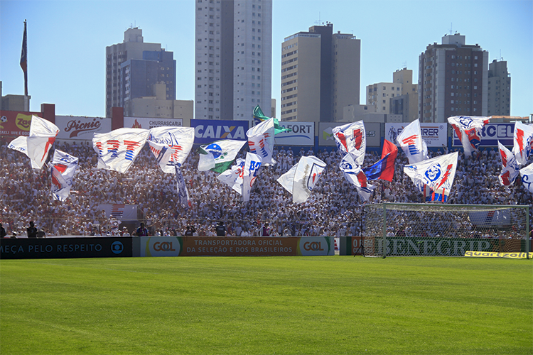

Fúria Independente é uma das mais famosas e apaixonadas torcidas organizadas do Paraná Clube, um dos principais clubes de futebol do estado do Paraná, Brasil
Fundada em setembro de 1993, a organização cresceu junto com o clube. Hoje, com quase 23 anos de atividade, a torcida organizada se tornou um braço forte do time.
TFI protagonizou momentos emblemáticos dentro e fora de campo com atitudes que se tornaram notícia no mundo de forma positiva e exemplar
A Fúria é reconhecida pelo domínio da Curva Norte, a padronização de material, inovações e pelo patrimônio. A sede da torcida, que fica a poucos metros da Vila Capanema.
